HEAL Platform Documentation
1. The HEAL Platform
The HEAL Platform is a cloud-based and multifunctional web interface that provides a secure environment for discovery and analysis of HEAL results and data. It is designed to serve users with a variety of objectives, backgrounds, and specialties.
The HEAL Platform represents a dynamic Data Ecosystem that aggregates and hosts data from multiple resources to make data discovery and access easy for users.
The platform provides a way to search and query over study metadata and diverse data types, generated by different projects and organizations and stored across multiple secure repositories.
The HEAL platform also offers a secure and cost-effective cloud-computing environment for data analysis, empowering collaborative research and development of new analytical tools. New workflows and results of analyses can be shared with the HEAL community to enable collaborative, high-impact publications that address the opioid crisis.
The HEAL Platform is powered by the open-source software “Gen3” (gen3.org). Gen3 was created by and is actively developed at the University of Chicago’s Center for Translational Data Science (CTDS) with the aim of creating interoperable cloud-based data resources for the scientific research community.
2. Types of hosted Data
a) Overview
The HEAL Platform provides secure access to data that is the product of opioid research and will be the driving engine for new discovery.
On the highest level, the data hosted on the HEAL Platform range from study metadata that describe available datasets at a high-level to subject-level data. The types of data represented are diverse and include scientific research across multiple disciplines, as well as studies related to policy making and community service leadership. For example, researchers can use this single platform to find data ranging from clinical patient care data and public records to “omics” data files and associated sample collection and processing data.
The HEAL platform aims to make data more accessible by following the "FAIR" principles:
Findable
- Researchers are provided an intuitive interface to search over metadata for HEAL studies and related datasets.
- Each study and dataset will be assigned a unique, persistent identifier.
Accessible
- Authenticated users can request and receive access to controlled-access data by data providers.
- Metadata can be accessed via an open API.
Interoperable
- Standard metadata vocabularies facilitate discovery and joint analysis of HEAL and related datasets. Data can
- Data can be easily exported to various workspaces for analysis using a variety of software tools.
Reusable
- Data can be easily reused to facilitate reproducibility of results, development and sharing of new tools, and collaboration between investigators.
b) Data Management and Repositories
The HEAL-funded RENCI/RTI (Renaissance Computing Institute) at the University of North Carolina at Chapel Hill team will provide data management, stewardship, and support to help investigators make their data FAIR and connect to the Platform. The HEAL Platform securely exposes data stored on multiple HEAL-approved repositories. For more information, see https://heal.nih.gov/about/public-access-data.
3. How to get started
a) HEAL Platform Overview
Click on an icon to jump to the section
b) Login Page
Browsing the study metadata on the Discovery Page, following along the pre-made notebooks in the
“Static Notebooks” tab, and downloading the file manifest with publicly accessible data files does not require
authorization and is open-access.
You will need to log in and obtain authorization (access) in order to run analyses in workspaces.
Click here to see all open-access studies.
Browsing the study metadata on the Discovery Page, following along the pre-made notebooks in the “Static Notebooks” tab, and downloading the file manifest with publicly accessible data files does not require authorization and is open-access.
You will need to log in and obtain authorization (access) in order to run analyses in workspaces.
Click here to see all open-access studies.
Clicking on a study containing controlled data will prompt users to log in. In order to access controlled data available on the HEAL Platform – for which you will be prompted once clicking on the study – or perform analyses in the workspace, start by visiting the login page (https://healdata.org).
Choose between “Login from Google” or “ORCID Login” on the (homepage) to authenticate.
Google: You may log in using any Google account credentials, or a G-suite enabled institutional email.
ORCID: Users with an ORCID account can log in using their ORCID credentials.

After successfully logging in, your username will appear in the upper right-hand corner of the page.
c) How to check and request access
Users can find out to which projects they have access to by navigating to the Discovery Page and by selecting “Data Access” - “Accessible” - ”OK” as shown below.
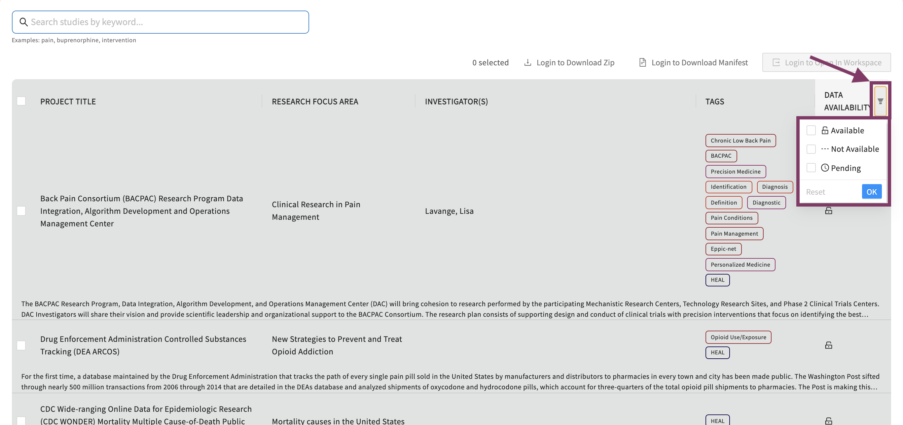Access to individual Studies
You can check access by clicking on a study in the Discovery Page, as shown below:
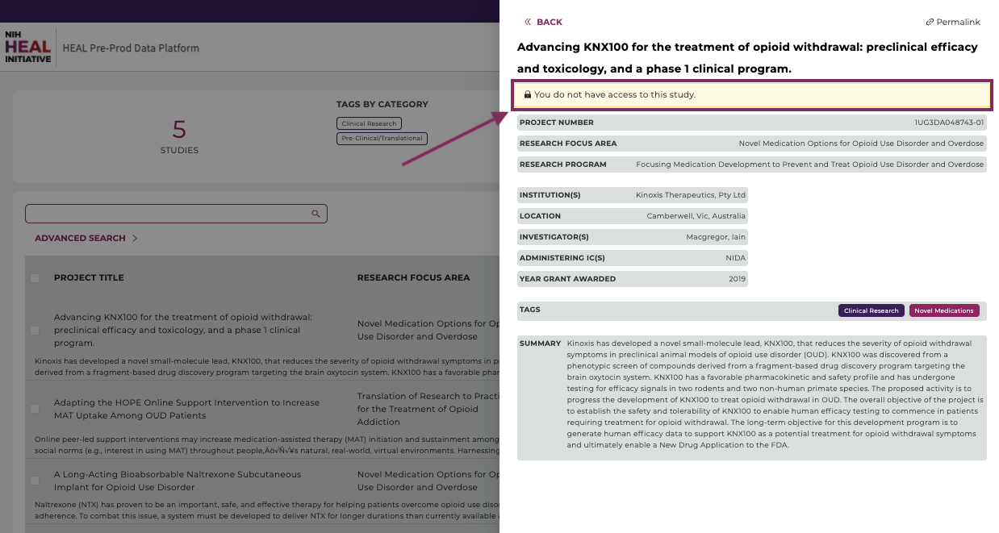If you have access, a green box will show “You have access to this study”; if you do not have access, a yellow box will appear with “You do not have access to the study.
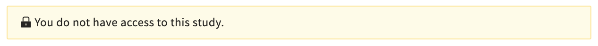 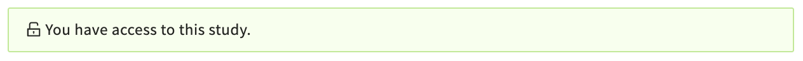Current (open-access) studies on HEAL
Users can download and/or export open-access study files after logging in via Google or ORCID. Currently, the HEAL Platform hosts the following studies. All are open-access except when noted.
| Project number | Study Name |
|---|---|
| 7e6de74d-b8a8-4e48-8a79-12d7a6567e1f | Prescription Drug Abuse Policy System (PDAPS) |
| nmhss | National Mental Health Services Survey (N-MHSS) |
| 1U24AR076730-01 | A synthetic dataset from the Back Pain Consortium (BACPAC) Research Program Data Integration, Algorithm Development and Operations Management Center |
| nssats1 | National Survey of Substance Abuse Treatment Services (N-SSATS) |
| cdcwonder | CDC Wide-ranging Online Data for Epidemiologic Research (CDC WONDER) Mortality Multiple Cause-of-Death Public Use Record |
| tedsd1 | Treatment Episode Data Set: Discharges (TEDS-D) |
| deaarcos1 | Drug Enforcement Administration Controlled Substances Tracking (DEA ARCOS) |
|
a) 1U2CDA050098-01_a b) 1U2CDA050098-01_b |
JCOIN - Methodology and Advanced Analytics Resource Center: a) JCOIN 026: Amerispeak Brief Stigma Survey b) The Opioid Environment Policy Scan |
Overview of access to Datasets and Studies
Users can visit the "Profile” page to view a list of studies they have access to under the “You have access to the following project(s)” section, as shown in the figure below.
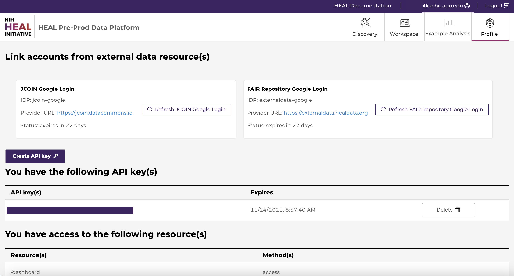From here users can also view current API keys or create and download new keys. API keys are required for downloads which require use of the Gen3-client. More information in the chapter “Downloading Data and Data Files”.
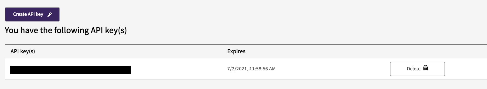From here users can also view if they have access to projects or workspaces
- /dictionary_page: You have access to the data dictionary.
- /workspace: You have access to the workspace.
- /programs/open: You have access to open-access projects.
Linking access to FAIR enabled repositories
Users need to login to access data stored on FAIR enabled repositories. Users can find the login by navigating on healdata.org/workspace and clicking on one of the login options as shown below. The access expires after 30 days.
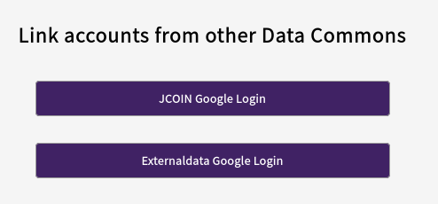
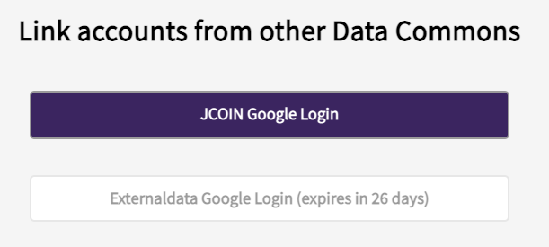
d) Discovery Page
The Discovery Page provides users a venue to search and find studies and datasets displayed in the HEAL Platform. Users can browse through the publicly accessible study-level metadata without requiring authorization.
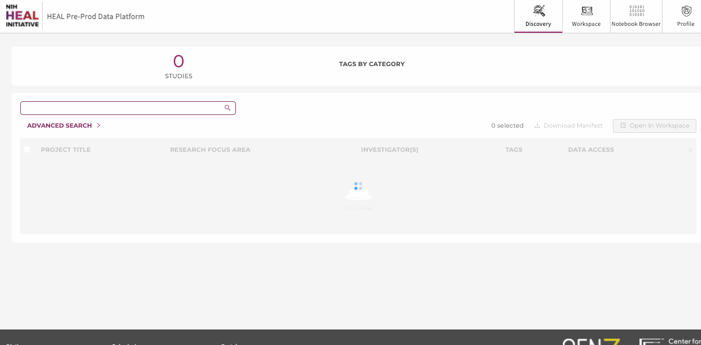Use text-based search, faceted search, and tags to rapidly and efficiently find relevant studies, discover new datasets across multiple resources, and easily export selected data files to the analysis workspace.
Finding studies is made easy using keywords (ex. study name, titles, investigator names, etc.) in the text-based search bar, tags, or the advanced search side panel, see image below.
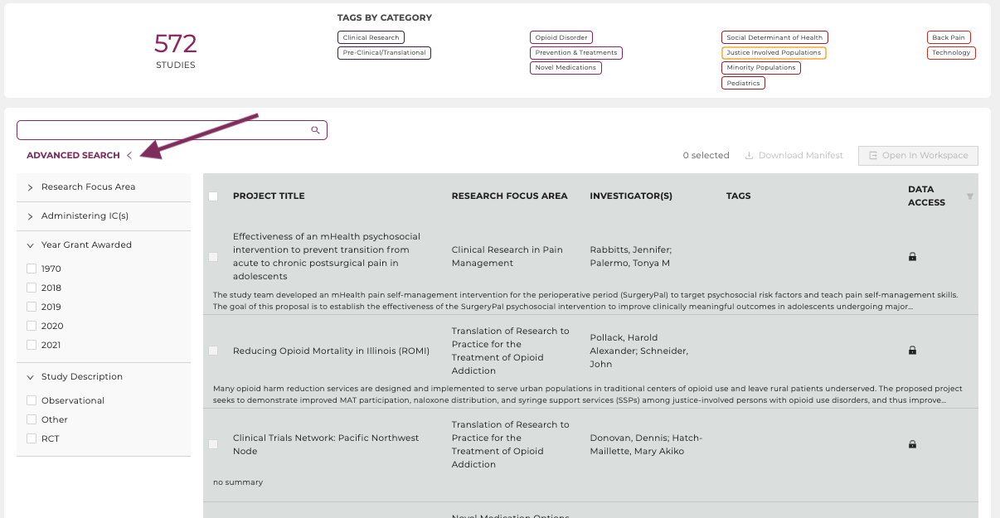Clicking on a study entry will display the associated study page, which summarizes the available study-level metadata stored on the HEAL Platform.
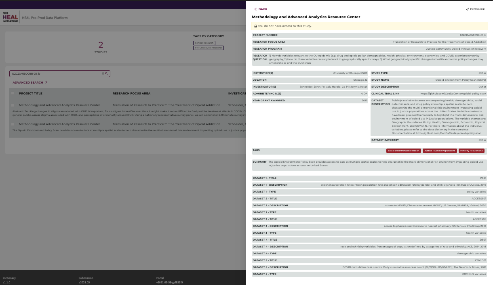Find available datasets
Users can select and filter studies from multiple resources and conduct analyses on the selected datasets in a workspace. Users can find search only available data they have access to by selecting the data access button in the top right corner of the study page and selecting “Data Access” as shown below. The Discovery Page will automatically update the list of studies that have available datasets.
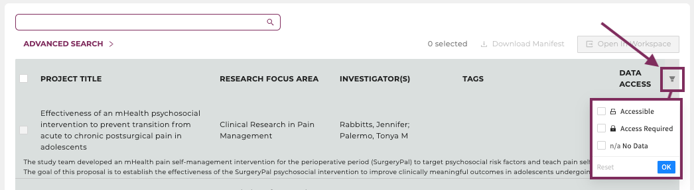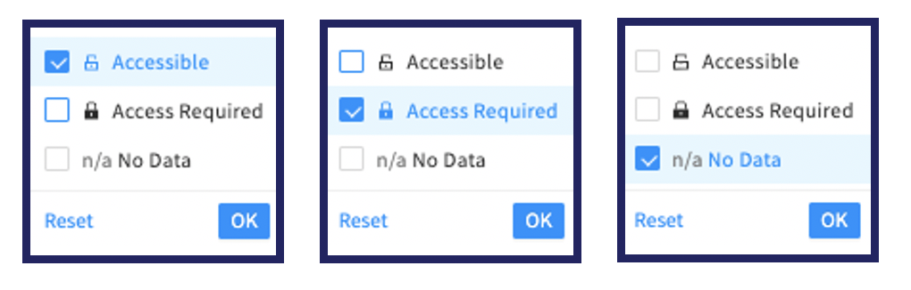
-
Accessible: This option will display only studies with datasets users have access to and entails
all open-access studies. Studies can be selected and exported to a workspace by clicking on the
associated checkbox on the left-hand side of the study entry and selecting “Open in Workspace” at
the top right corner. A detailed description of how to go from here can be found in the "Workspaces" chapter.

Fig. 14. Export datasets to the workspace by selecting the study and clicking on “Open in workspace”.
-
Access required: This option will display all studies that have only metadata with no accompanying
data file objects download.
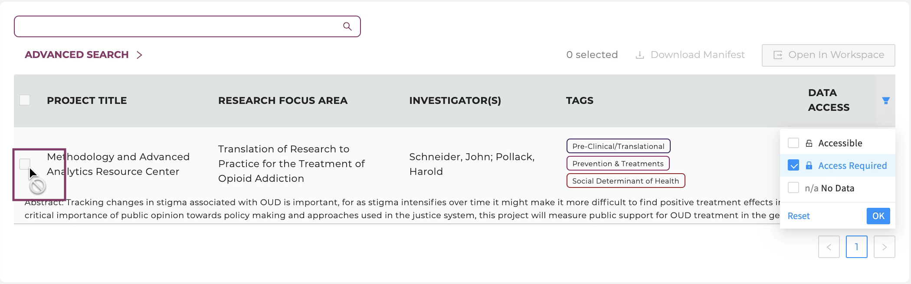Fig. 15. Export datasets to the workspace by selecting the study and clicking on “Open in workspace”.
- No Data: This option will filter out all studies that will only have metadata but no datasets available. The checkbox next to the study will be greyed out and non-clickable as shown above.
Select Files on the Discovery Page and bring them to the Workspace
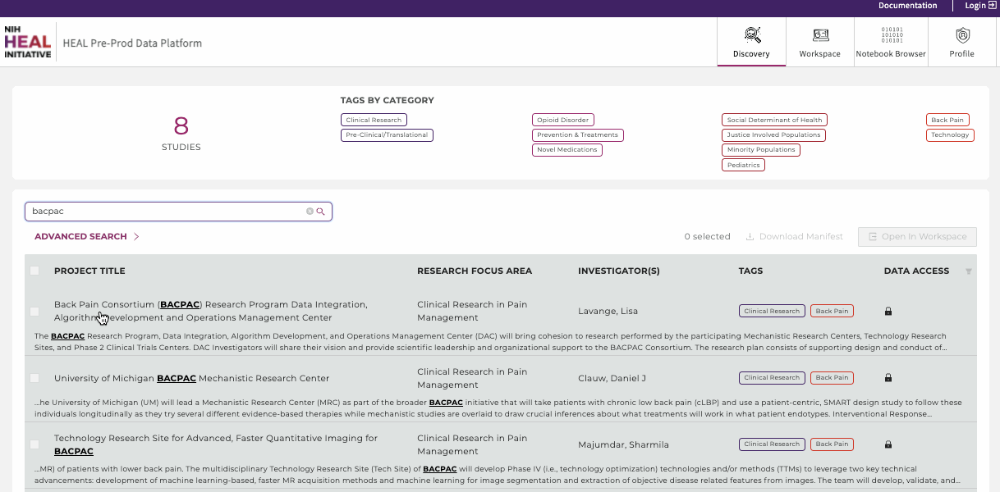The above gif shows the workflow used to import files into the workspace:
- Log in on healdata.org/login.
- Find and select study on the Discovery Page using the checkbox on the left side. See current open-access studies here.
- Click the “Open in Workspace” button on the upper right corner.
- Choose a workspace flavor. This step may take several minutes.
-
Find the files from the study under
data/healdata.org/manifest-xxxxx. Note, that all exported data files will be saved in the “data” folder.
Please also note, that the workspace mounts up to a maximum of 5 different manifests while the workspace is running but shows only the latest exported manifest in a newly launched workspace. Terminating the workspace will result in the loss of all but the latests manifest. -
Users can now start a new notebook when navigating to
/data. Click “New” (upper right corner) or open a previously saved notebook on the landing drive to load the files into one of the cells, for example by running
import os
import pandas as pd
os.chdir('/data')
demo_df = pd.read_csv('/data/new_folder/this_is_a_demo.txt', sep='\t')
demo_df.head() - Make sure to terminate the workspace when the work is finished to reduce computational costs.
e) Workspaces
HEAL Platform workspaces are secure data analysis environments in the cloud that can access data from one or more data resources. By default, Workspaces include Jupyter notebooks, Python and RStudio, but can be configured to host virtually any application, including analysis workflows, data processing pipelines, or data visualization apps.
Guideline to get started
- Users need to log in via healdata.org/login to access workspaces on healdata.org/workspace.
-
After navigating to healdata.org/workspace, users will discover a list of pre-configured virtual machine (VM) images, as shown below.
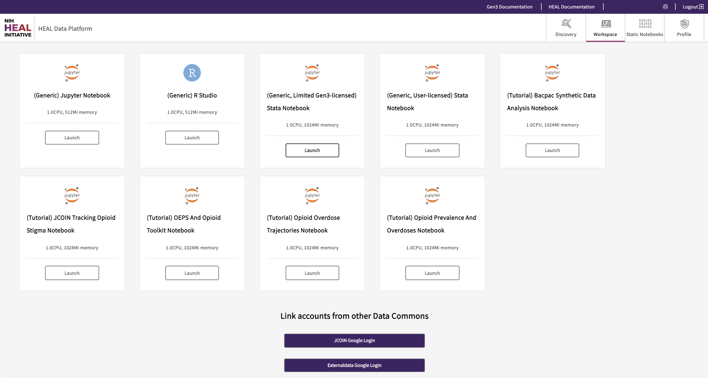Fig. 16. Available workspaces on the HEAL Platform.
- Tutorial Notebooks (Bacpac, JCOIN, OEPS, Opioid Overdose Trajectories, Opioid Prevalence And Overdoses): Explore our Jupyter Notebook tutorials, which pull data from various sources of the HEAL Data Ecosystem to leverage statistical programs and data analysis tools. Feel free to edit and experiment with this collection of notebooks. They are your personal copies! More information in "Static Notebooks".
- (Generic) Jupyter Notebook Bio Python 512 Mi: Choose this VM if you are familiar with setting up Python-based Notebooks
- (Generic) Jupyter Notebook Power Python 8192 Mi: Choose this VM if your analyses demand high computational resources.
- (Generic) R Studio: Choose this VM if you are familiar with R Studio-based data analysis tools.
- (Generic, User-licensed) Stata Notebook: Choose this VM if you are familiar with STATA-based data analysis. This notebook requires a STATA license.
-
Click “Launch” on any of the above workspace flavors to spin up a copy of that VM. Note: Launching the VM may take several minutes.
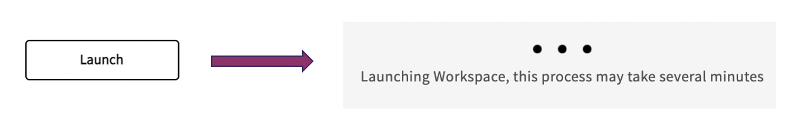 -
After launching, the home folder is displayed, which is a user's persistent drive.
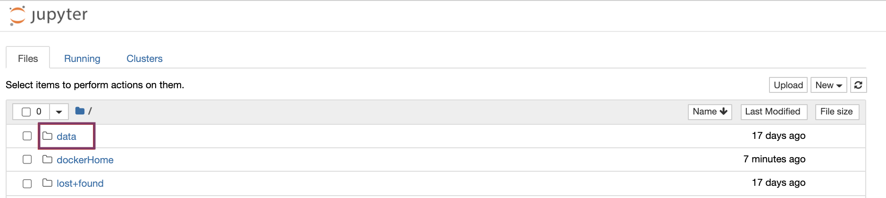Fig. 17. To save files, create directories in the “data” folder and save files there. Do not save in the folder “data/healdata.org”.
Only files saved in this folder will remain available after termination of a workspace session. It is advisable to create a new folder in the “data” folder and save work there. Do not save files in the “data/healdata.org” folder. The folder “healdata.org” in the “data” folder will host the data files you have exported from the Discovery Page (see next chapter).
Attention: Any personal files outside this folder will be lost. -
Start a new workspace by clicking “New” in the top right corner and choose between Python 3 or R Studio as the base programmatic language.
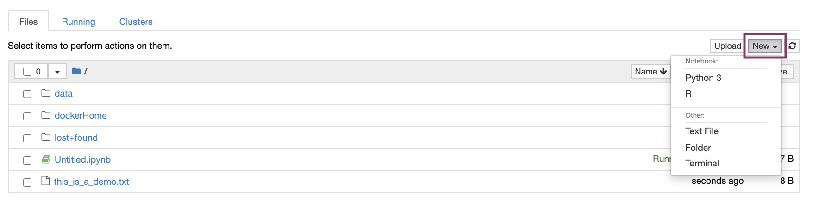Fig. 18. Start a new notebook under “New”.
STATA code can be run in a regular Python 3 or R notebook and combined with other languages. Enter%%stataor%%mataat the top of the cell.
Running STATA code requires a license. Copystata.licto/usr/local/stata17/.
-
Experiment away!
Code blocks are entered in cells, which can be executed individually or all at once. Code documentation and comments
can also be entered in cells, and the cell type can be set to support Markdown. Results, including plots,
tables, and graphics, can be generated in the workspace and downloaded as files.
Files can be uploaded to the current working directory by clicking on the “upload” button (note, that uploading to the “data” folder is advised; but not in the “healdata.org” folder).
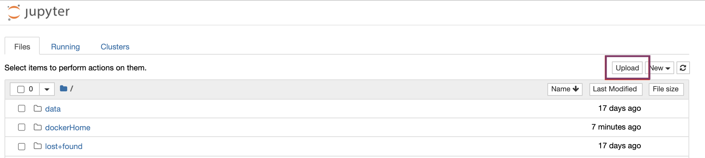Fig. 19. Upload data files to the workspace by clicking on “Upload” in the top right corner.
Then run in the notebook, for example:
import os
import pandas as pd
os.chdir('/data')
demo_df = pd.read_csv('/data/new_folder/this_is_a_demo.txt', sep='\t')
demo_df.head()
-
You can save and download your notebook. Note: saving notebooks within the “data” directory is the advised option, but not in the “data/healdata.org” folder.
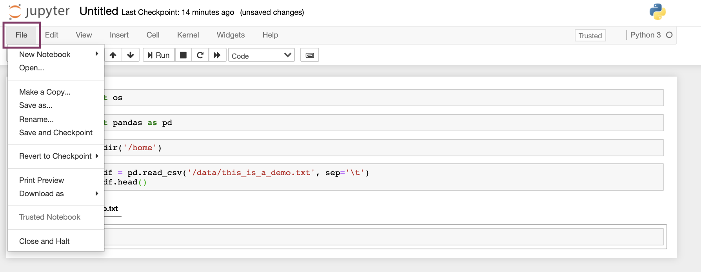Fig. 20. Save and export your notebook under “File” in the top left corner.
-
Do not forget to terminate your workspace once your work is finished to be mindful of the cost-intensive computational effort.
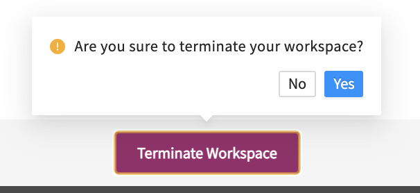Fig. 21. Do not forget to terminate your workspace once your work is finished. Unterminated workspaces continue to accrue computational costs.
f) Static Notebooks
The Static Notebooks page contains a collection of view-only tutorial Jupyter Notebooks that provide demo analyses of datasets published on the HEAL platform. These notebooks will allow users to learn how to analyze and visualize data available on the HEAL platform - without having to take the additional steps of finding and exporting the data used by the tutorial first.
All tutorial notebooks are static and view-only but can be downloaded as .html files.
Find the notebooks in interactive mode in the workspaces tab.
These tutorial notebooks are meant to:
- Give users a sense for how the platform can be used to analyze data.
- Bring complementary datasets together.
- Be used as a launching point for the users’ own custom analysis.
- Spark imagination about how users can incorporate the platform data access, analysis, and collaboration tools into their own research and data analysis process and pipelines.

Currently available Notebooks
The static Notebooks tab acts as a visual ‘table of contents’ for all of the tutorial notebooks that are available for users to interact with in the workspace. Find below a list of notebooks that are currently available and which datasets they’re based on.
|
Notebook Name |
Project Title |
Project Number |
Datasets used |
|---|---|---|---|
| BACPAC synthetic data analysis | Back Pain Consortium (BACPAC) Research Program Data Integration, Algorithm Development and Operations Management Center | 1U24AR076730-01 |
1) participant_ SMART.tsv 2) substance_use_ SMART.tsv 3) physical_function_ SMART.tsv |
| Tracking Stigma related to Opioid Use Disorder | Methodology and Advanced Analytics Resource Center | 1U2CDA050098-01_a |
1) JCOIN_NORC_ Omnibus_SURVEY1_ Feb2020.sav 2) JCOIN_NORC_ Omnibus_SURVEY2_ April2020.sav 3) JCOIN_NORC_ Omnibus_SURVEY3_ June2020.sav 4) JCOIN_NORC_ Omnibus_SURVEY4_ Oct2020.sav |
| Opioid Prevalence And Overdoses |
1) Drug Enforcement Administration Controlled Substances Tracking (DEA ARCOS) 2) Prescription Drug Abuse Policy System 3) CDC Wide-ranging Online Data for Epidemiologic Research (CDC WONDER) Mortality Multiple Cause-of-Death Public Use Record |
1) deaarcos1 2) 7e6de74d-b8a8-4e48-8a79-12d7a6567e1f 3) cdcwonder |
1a) dea_arcos_drug_list.tsv 1b) dea_arcos_county_population.tsv 1c) dea_arcos_combined_county_annual.tsv 1d) dea_arcos_state_population.tsv 2a) 20170216-RM-Stat-Data.xlsx 2b) Naloxone_Data_09112020.xlsx 2c) 20180810_Good_Samaritan_Law_Stat_Data.xlsx 3a) CDC_WONDER_unintentional_overdoses.tsv 3b) CDC_WONDER_suicide_overdoses.tsv 3c) monthly_unintentional_overdoses.tsv |
| OEPS And Opioid Toolkit | Methodology and Advanced Analytics Resource Center | 1U2CDA050098-01_b |
1) ZIP_COUNTY.xlsx 2) us-wide-moudsCleaned.csv 3) zctas2018.shp |
| Opioid Overdose Trajectories | CDC Wide-ranging Online Data for Epidemiologic Research (CDC WONDER) Mortality Multiple Cause-of-Death Public Use Record | cdcwonder |
1) deaths_gender.xlsx 2) deaths_age_cat.xlsx 3) deaths_type_opioid.xlsx 4) cdc_wonder_year_cause_hedegaard_et_al_2020.txt 5) cdc_wonder_year_cause_state_hedegaard_et_al_2020.txt |
The “Static Notebooks” tab will be regularly updated with new and exciting tutorial data analysis notebooks, as more datasets are published and brought together in novel ways on the Platform.
How to find and work with the Notebooks in the workspaces
Code in the notebooks is editable, and users can import additional datasets and extend their analysis. In order to work with the tutorial Jupyter Notebooks in interactive mode, the data used by the tutorial notebook must be exported to a workspace from the Discovery page. Below we describe the steps to do so for the current tutorial Jupyter notebooks. Users must be logged in to follow the steps below. Note, that some notebooks above require linked access to FAIR enabled repositories, as described here.
a) HEAL_Workspace_Demo_BACPAC.ipynb (“BACPAC synthetic data analysis”)
-
Find and select the study by the project number (1U24AR076730-01) on the Discovery Page. Project numbers and datasets are given in the previous section.
-
Click the “Open in Workspace” button in the upper right corner. This step will create a manifest folder which you can find later in the Workspace’s folder "data/healdata.org".
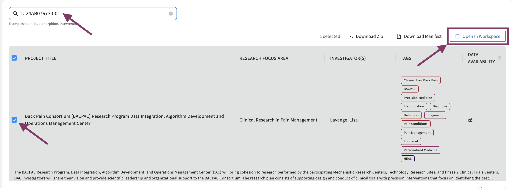Fig. 23. Select the study and click on “Open in Workspace”.
-
Go to the Workspace tab and click “Launch” on the “Bacpac Synthetic Data Analysis Notebook”. This may take a few minutes to load.
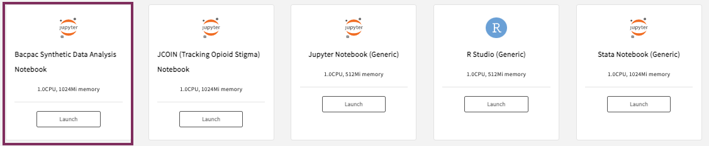
-
Find and open the notebook in the folder home/dockerHome.
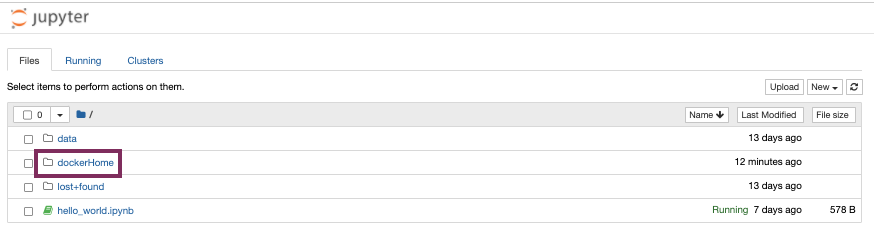
-
Open the notebook by clicking on “HEAL_Workspace_Demo_BACPAC".
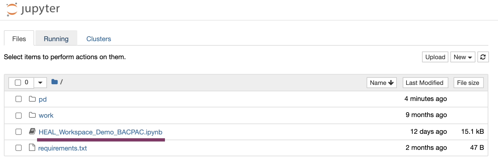
-
Click the first two cells and run them by clicking into the cell and either using shift+enter on the keyboard or selecting “Run”:
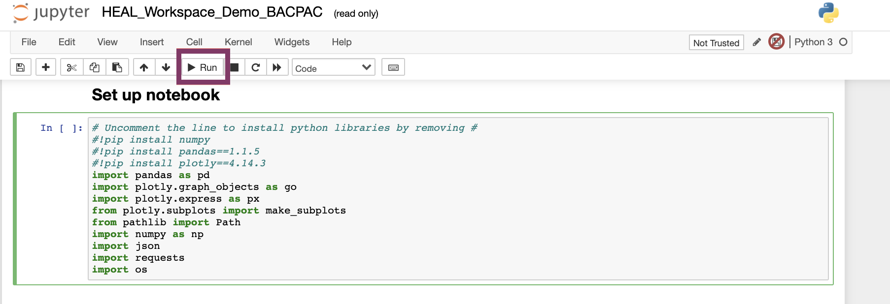
-
Run the next cell, making sure you copy the name of the exported manifest folder, as shown below:
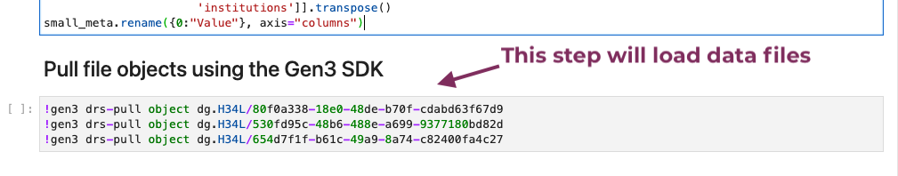
- Explore the rest of the notebook. Make sure to terminate the workspace when the work is finished to reduce computational costs.
Note:Work must be saved within the “data” directory in order to remain accessible after workspace termination.
b) NORC_JCOIN_data_demo.ipynb (“Tracking Stigma related to Opioid Use Disorder”)
This dataset requires Data Access. Click here to activate access.
-
Find and select the study by the project number (1U2CDA050098-01_a) on the Discovery Page.
Two studies (a and b) are listed under the project number 1U2CDA050098-01. Make sure to select the project 1U2CDA050098-01_a, as shown when clicking on the study.
-
Click the “Open in Workspace” button in the upper right corner. This step will create a manifest folder which you can find later in the Workspace’s folder "data/healdata.org".
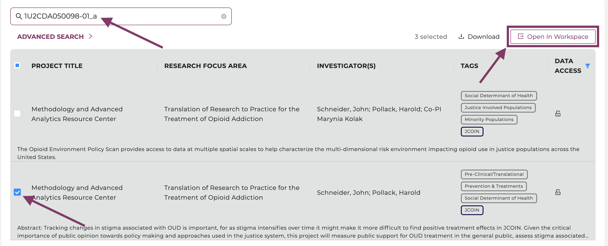Fig. 24. Find/select the project 1U2CDA050098-01_a (as shown when clicking on the study) and select “Open in Workspace”.
-
Go to the Workspace tab and click “Launch” on the “JCOIN (Tracking Opioid Stigma) Notebook”. This may take a few minutes to load.
-
Find and open the notebook in the folder home/dockerHome.
-
Open the notebook by clicking on "NORC_JCOIN_data_demo.ipynb".
-
Click the first two cells and run them by clicking into the cell and either using shift+enter on the keyboard or selecting “Run”.
-
Run the next cell, making sure you copy the name of the exported manifest folder, as shown below:
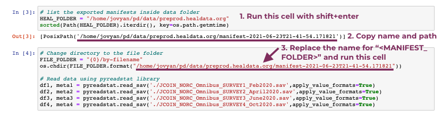
- Explore the rest of the notebook. Make sure to terminate the workspace when the work is finished to reduce computational costs.
Note:Work must be saved within the “data” directory in order to remain accessible after workspace termination.
g) Profile Page
On the profile page users will find information regarding their access to projects, access to Gen3-specific tools (e.g. access to the /workspace), and the function to create API keys for credential downloads. API keys are necessary for the downloadof files using the Gen3-client; for more information see chapter 4.
4. Downloading Data and Data Files
Users can download data files associated with a study by leveraging the programmatic tools “Gen3-client” and the CTDS-owned python software development kit (SDK). Note, that accessing some data files require linked access to FAIR enabled repositories, as described here.
a) Download data files using the Gen3-client
In order to download data files, users will need to utilize the Gen3-client command line tool developed by the University of Chicago’s Center for Translational Data Science. The process consists of the following steps:
-
Log in to the Data Commons on healdata.org/login
- Find and select one or multiple studies of interest on the Discovery Page. For multiple studies, select Data Access in the top right corner, click “Accessible”, and choose multiple studies.
-
Click on the button “Download Manifest”.
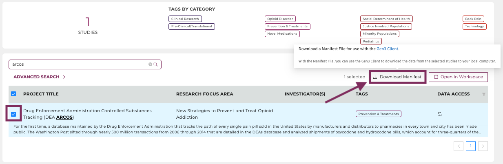Fig. 27. Select a study of interest, then click the button “Download Manifest”.
-
Create and download an API key from your Profile Page. Note where you save the API key on your local machine.
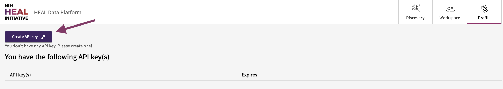Fig. 28. Create an API key on the profile page.
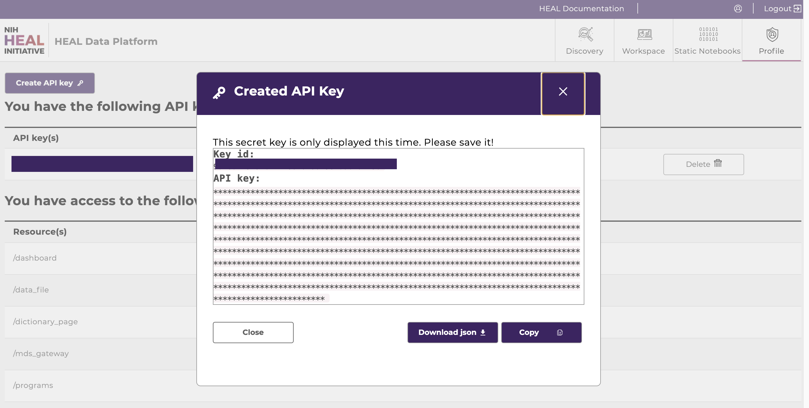Fig. 29. Download the API key as json file and note the directory where the API key was saved for step 6.
-
Download and configure the Gen3-client
a. Follow the download instructions of the Gen3-client here. The client can be downloaded here.
b. In your terminal, configure your profile using the following command:
gen3-client configure --profile=<profile_name> --cred=<credentials.json> --apiendpoint=<api_endpoint_url>
#Mac/Linux:
gen3-client configure --profile=demo
--cred=~/Downloads/demo-credentials.json --apiendpoint=https://healdata.org/
#Windows:
gen3-client configure --profile=demo
--cred=C:\Users\demo\Downloads\demo-credentials.json --apiendpoint=https://healdata.org/
#Output:
10:08:20 Profile 'demo' has been configured successfully.
If successfully executed, a configuration file will be stored under the directory the user specified under “cred”. For troubleshooting, refer to the instructions found here.
c. Download files by using the following command, which references the manifest file name and its location:
gen3-client download-multiple --profile=<profile_name> --manifest=<manifest_file> --download-path=<path_for_files>
gen3-client download-multiple --profile=demo --manifest=manifest.json --download-path=downloads
#Output:
2021/06/03 16:48:46 Reading manifest...
200 B / 200 B [===================] 100.00% 0s
WARNING: flag "rename" was set to false in "original" mode, duplicated files under "downloads/" will be overwritten
Proceed? [y/n]: y
2021/06/03 16:48:47 Total number of GUIDs: 1
2021/06/03 16:48:47 Preparing file info for each file, please wait...
1 / 1 [============================================] 100.00% 0s
2021/06/03 16:48:47 File info prepared successfully
arcos_all_washpost.tsv.gz 6.41 GiB / 6.41 GiB [=======================================================] 100.00% 0s
5. FAQ
-
What can I do on the HEAL Platform?
The HEAL Platform is a cloud-based and multifunctional web interface that provides a secure environment for discovery and analysis of HEAL results and data. Explore all functionalities here.
-
Which datasets are currently open-access?
Find all open-access datasets here.
-
Where can I see individual study metadata?
Individual study metadata is shown upon clicking on a study entry on the Discovery Page. Click to read the full description here.
-
How and where can I see if I have access to a study?
Clicking on an individual study on the Discovery Page will show in the top right corner if they are accessible to the user. To see all studies users have access to, users should navigate to the Discovery Page and select “Data Access” - Accessible”. More information here.
-
I do not have access to a specific study, how can I get access?
RENCI/RTI (Renaissance Computing Institute) at the University of North Carolina at Chapel Hill establishes and manages data access contacts over all data contributors/sources. To request access to controlled data, users should contact RENCI/RTI at HEALstewards@renci.org.
-
The profile page says I have access but I don’t see it on the Discovery Page.
Please contact our help desk at support@datacommons.io.
-
Do I need to store my data in a particular location, repository, or
database in to participate in the HEAL platform?
You must store your data in a HEAL-approved repository. A HEAL-approved repository is a data repository that is NIH-approved AND positively has an API for metadata, data, and data permissions calls.
-
How do I find a HEAL-approved repository in which to store my data?
Please reach out to HEALstewards@renci.org for further questions on this topic.
-
Are there costs that will be the responsibility of individual investigators associated with data storage in a HEAL-approved repository now and in the future?
Please reach out to HEALstewards@renci.org for further questions on this topic.
-
I would like to download data files from a specific study, what do I need to do?
Users need to use the Gen3-client command line tool to download data files, as described here. Additional information on the Gen3-client may be found here.
-
My data file download gets stuck, where can I get help?
For troubleshooting, please see the Gen3-client documentation here. If errors persist, contact our help desk at support@datacommons.io.
-
The Gen3-client shows errors, where can I get help?
To check that the client is working and to confirm the client version, type ‘gen3-client’ in the terminal. Typing ‘gen3-client help’ will display the help menu. Users must provide the full path of the tool in order for the commands to run, for example, ‘./gen3-client’ while working from the directory containing the client.
For more troubleshooting, please see the Gen3-client documentation here. If errors persist, contact our help desk at support@datacommons.io.
-
I want to report a bug!
Please report any errors or bugs to our help desk at heal-support@datacommons.io.